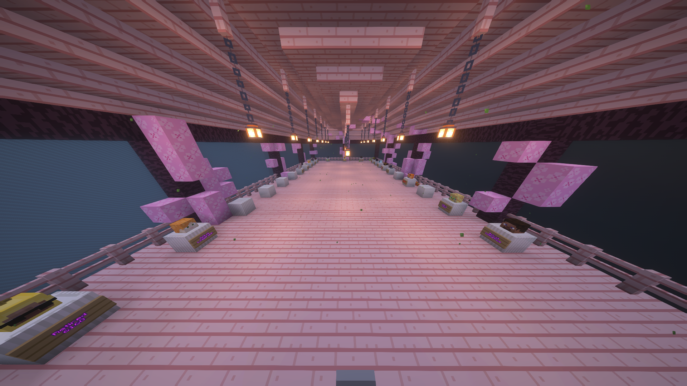

The staff team of WorldsGen is responsible for moderation and adding new content to the server. They also plan everything that gets added to WorldsGen. The owner and creator of WorldsGen is Normallion5, who originally created the server and launched its first season.
In Season 4, the staff team expanded significantly to help make WorldsGen even better. Luckydragoon served as the co-owner during Season 4 but was demoted due to inactivity, a fate that affected several members of the older staff team. After Luckydragoon, Dark7v became the co-owner but retired in Season 5 to focus on other pursuits.
The newest and current co-owner is Killmister88. He started as a helper in mid-Season 5, was promoted to moderator, later, due to his excellent skills in development, вas promoted to developer, and later, due to his excellent skills in management, he was promoted to head-manager and eventually co-owner.
The admin Mrkevinbilbo (then head admin) received a tryout for the manager position but wasn’t ready at the time. Later, Chewiechewbacca became a manager but was demoted to head admin. When Mutiges retired, Chewiechewbacca returned as head manager. However, Mutiges has since come back, choosing to take on a moderator role instead.
Players can apply for staff positions through Applications, where applications are reviewed by admins and higher ranks to decide on acceptance.
Builders and Developers are not considered part of the staff team, as they do not handle moderation or planning tasks.
